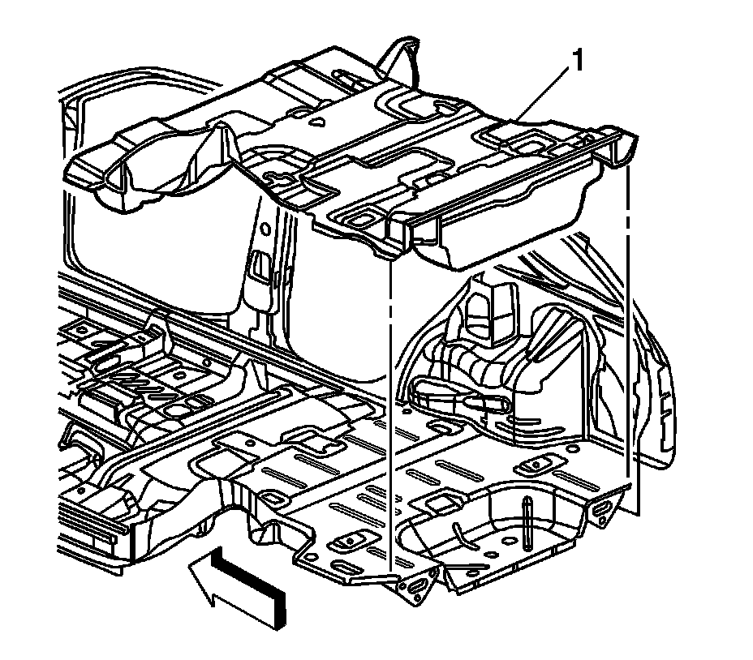

Rear Floor Panel Carpet Replacement
Rear Floor Panel Carpet Replacement
Removal Procedure
Caution: Refer to SIR Caution (SIR Caution) .
Caution: In order to prevent SIR deployment, personal injury, or unnecessary SIR system repairs, do not strike the door or the door pillar in the area of the side impact sensor (SIS). Turn OFF the ignition and remove the key when performing service in the area of the SIS.

1. Remove the rear seat no. 1. Refer to Rear Seat Replacement (Rear Seat Replacement) .
2. Remove the rear seat no. 2. Refer to Rear Number 2 Folding Seat Replacement (Rear Number 2 Folding Seat Replacement) .
3. Remove the rear carpet retainers. Refer to Rear Carpet Retainer Replacement (Service and Repair) .
4. Remove the rear sill plate. Refer to Rear Compartment Sill Trim Plate Replacement (Service and Repair) .
5. Remove the body side rear trim panels. Refer to Body Side Rear Trim Panel Replacement (w/TB5) (Service and Repair)Body Side Rear Trim Panel Replacement (w/o TB5) (Service and Repair) .
6. Remove the rear carpet (1) from the vehicle.
Installation Procedure
Caution: All floor pan insulator material must meet Federal Vehicle Safety Standards for flammability. Failure to do so could result in personal injury and/or vehicle damage.
Caution: In order to avoid personal injury or vehicle damage when you repair or replace the carpet, use the same thickness and material size as the original installation. Always return the carpet to the original location.
1. Place the carpet (1) into the vehicle.
2. Ensure the electrical connectors are exposed above the carpeting.
3. Secure the rear carpet hook and latch material to the intermediate carpet in four places.
4. Press the carpet to the floorpan in order to remove any distortion from the carpet.
5. Install the body side trim panels. Refer to Body Side Rear Trim Panel Replacement (w/TB5) (Service and Repair)Body Side Rear Trim Panel Replacement (w/o TB5) (Service and Repair) .
6. Install the rear sill plate. Refer to Rear Compartment Sill Trim Plate Replacement (Service and Repair) .
7. Install the rear carpet retainers. Refer to Rear Carpet Retainer Replacement (Service and Repair) .
8. Install the rear seat no. 2. Refer to Rear Number 2 Folding Seat Replacement (Rear Number 2 Folding Seat Replacement) .
9. Install the rear seat no. 1. Refer to Rear Seat Replacement (Rear Seat Replacement) .